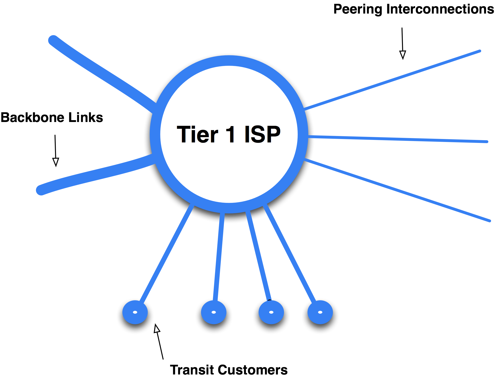
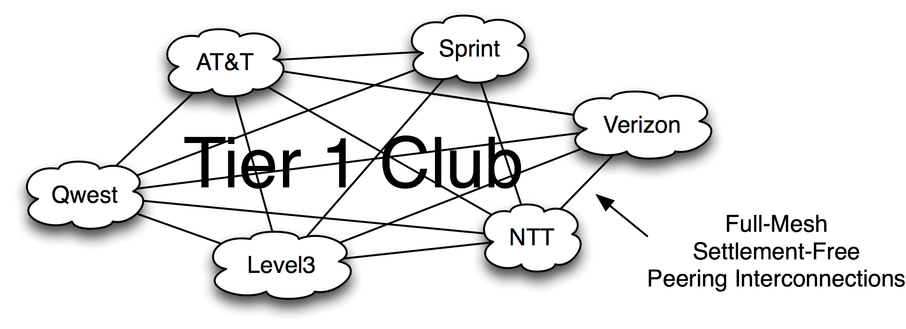
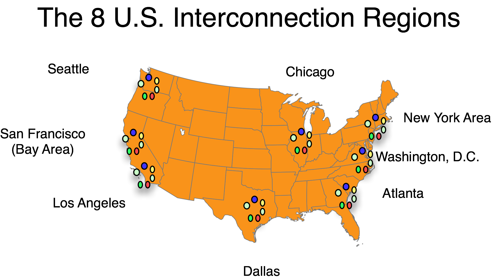
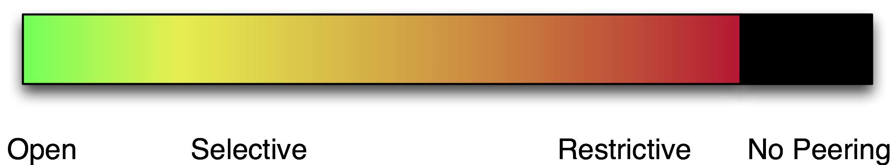

The Tier 1 ISP
In each Internet Peering Ecosystem the Tier 1 ISP is at the top of the pyramid.
Definition: A Tier 1 ISP is an ISP that has access to the entire Internet Region routing table only through its settlement-free peering relationships.
The term “Tier 1 ISP” has been an overloaded and misused term in the industry. The term has been used to communicate everything from scope (“global”) to quality (“top-notch”).
In this book, however, the term “Tier 1 ISP” has an objective, functional definition, which includes a litmus test that can be used to determine a participant’s position, corresponding motivation, and expected behavior.
The Tier 1 ISP litmus test is whether an ISP pays to reach any destination within a particular Internet Region. If the ISP requires anything more than its free and reciprocal peering arrangements, it is not a Tier 1 ISP in that Internet Region.
So that you may identify this species in the wild, Figure 9-2 shows a model of the Tier 1 ISP.

Figure 9-2. The Tier 1 ISP model.
The Tier 1 ISP model has three elements:
- Transit customers links
- Peering interconnections
- Backbone links to the ISP’s other core routers
We will discuss each of these interconnections in turn.
Transit Customer Links. Shown as attached lines underneath the ISP core routers, transit customers connect either directly to the core routers or, more commonly, to tributary routers that feed into the core router.
Peering Interconnections. Each interconnect link needs to have enough capacity to handle the aggregate traffic to and from the other Tier 1 ISPs.
Backbone Links. The lines on the left side of the Tier 1 ISP model represent the backbone connections linking the Tier 1 ISP’s core routers together. The core routers and links together make up the core of the Tier 1 ISP’s transit network. These links must have the capacity to carry the aggregate traffic across the core and on to the end customers.
The Tier 1 ISP Interconnection Mesh
Figure 9-3 shows the full-mesh nature of Tier 1 ISP interconnections. For simplicity, not all Tier 1 ISPs in the U.S. are included in the figure.

Figure 9-3. Tier 1 ISPs interconnect in a full mesh topology.
By definition, Tier 1 ISPs enjoy settlement-free access to all destinations within the Internet Region. Some in the peering community refer to the set of Tier 1 ISPs as the “Tier 1 Club.” This area of the Internet Region is called the “default-free zone” since the Tier 1 ISPs do not have a default route to any of the other Tier 1 ISPs for any destination within the Internet Region. They merely announce their customer routes to each other and they have access to the entire Internet Region routing table.
There are few (1–15) Tier 1 ISPs within an Internet Region and, with so few peers, they tend to prefer Private Peering.
The Tier 1 ISPs sell wholesale transit services primarily to resellers, but may also sell directly to the largest content companies.
Notes from the field.
Why the Tier 1 ISP Distinction is Important
The existence and nature of the business relationships between ISPs is typically confidential information, making it difficult for an outsider to verify that an ISP has only “free” peering relationships in an Internet Region. As a result, some would say this “Tier 1 ISP“ litmus test is almost impossible to execute. At the same time, most of the active players in the Internet Region have a pretty good idea about who is (and who is not) part of the “Tier 1 Club.” From a practical perspective, who is and who is not a Tier 1 ISP is not a tightly held secret. The “Tier 1 ISP” is an important distinction because it is directly related to the ISP’s motivations and predictable behaviors in the Internet Region. Tier 1 ISPs are not motivated to peer with anyone else to reduce the cost of transit since, by definition, Tier 1 ISPs don’t pay for transit.
Tier 1 ISP Interconnect Regions
The Tier 1 ISPs in large Internet Regions full-mesh peer with each other in multiple geographically diverse locations. In the U.S. for example, there are eight Interconnect Regions, as shown in Figure 9-4.
There are several reasons for spreading the load like this. First, no single interconnect can handle all traffic between the Tier 1 ISPs. Second, customers look at network maps during purchasing, and they want to see redundancy and resilience. Third, spreading the traffic provides a lower-latency path between the ISPs’ customers. Finally, spreading the load can decrease the likelihood of network congestion and retransmissions, which further overload an already congested network. Spreading the load not only decreases the bit-miles the network has to carry the traffic, it also improves the performance of the network.
Most Internet Regions distribute enough traffic to require multiple interconnect regions.
To understand the behavior of the Tier 1 ISP in the peering ecosystem, we must first take a diversion to talk about Peering Inclinations and peering policies.

Figure 9-4. Tier 1 ISPs interconnect their networks in each of the eight interconnection regions.
Peering Inclinations and Peering Policies
What are the Tier 1 ISPs’ motivations? To answer this question, we need to separate the Tier 1 ISP Peering Inclination from its articulated Peering Policy.
Definition: A Peering Inclination is a predisposition towards or against peering in a particular Internet Peering Ecosystem.
Definition: A Peering Policy is an articulation of the Peering Inclination; it documents and defines (for others) the prerequisites to peering.
The Peering Policy is what one might find on an ISP web site, or it may be received after signing a nondisclosure agreement. But to predict the peering behavior, it is important to understand the underlying Peering Inclination.
There are roughly four categories of Peering Inclination observed in the field, as shown in Figure 9-5.

Figure 9-5. The spectrum of Peering Inclinations.
An “Open” Peering Inclination is a willingness to peer with any other player in the ecosystem.
A “Selective” Peering Inclination is the willingness to peer with any other player, but with a few requirements. A common requirement is that there must be a minimum traffic volume for peering to be worth setting up.
A “Restrictive” Peering Inclination reflects a desire not to peer with anyone other than their existing peers.
A “No Peering” inclination reflects the desire not to peer at all. Purchasing transit is the preferred method for these players.
Peering Position and Peering Inclination Predict Behavior
We can predict peering behavior by identifying the player position and its corresponding Peering Inclination.
One might ask “Why model both a Peering Inclination and a Peering Policy? Aren’t they the same?”
Consider this common (composite) story heard in the field.
Notes from the field.
Peering Policy vs. Peering Inclination
A Tier 1 ISP has a posted Peering Policy indicating that it will peer with ISPs of “similar size and scale.” The ISP may require the peer to meet it in a large number of locations, in a large number of regions around the world, and with a large traffic volume to peer with a balanced in:out ratio. Many Tier 2 ISPs have expressed frustration because as soon as they met these stated requirements, the Tier 1 ISP immediately adjusted the requirements upwards – just out of their reach.
This situation demonstrates the more important underlying motivation – the Tier 1 ISP inclination not to peer. The Peering Policy is to “restrict.” There is a big difference between the stated policy and the inclination.
Stated most eloquently by Waqar Khan (Qwest, a Tier 1 ISP in the U.S.),
“We have all the peering we need.”
And he is correct. Almost all Tier 1 ISPs across the globe we studied exhibited the same motivations and exhibit the same behavior – they simply do not need, nor do they want, any more peering. In the field they call it a Restrictive Peering Policy, but everyone knows that means that they are not interested in peering with anyone else in their Internet Region.
Definition: A Restrictive Peering Policy is an articulation of an inclination not to peer with any more entities.
Few Tier 1 ISPs will publicly admit that they have a Restrictive Peering Policy. They will argue that they have a Selective Peering Policy by these definitions because the requirements are objective and articulated, and they would claim that some have found the requirements reachable.
As demonstrated in the notes from the field, most peering policies can be updated at any time. The threat of regulation has made the Tier 1 ISPs systematically keep track of peering requests and the processing of those requests through their systems. They want to be able to demonstrate how they are consistent about the application of their publicly stated policies. Ultimately however, the decision to peer is an internal business decision. The important thing to understand is the underlying motivations. That will ultimately drive behavior, regardless of what the Peering Policy indicates.
Tier 1 ISPs see the rest of the participants in the Internet Peering Ecosystem as potential customers, and do not seek peering with them. In fact, they are averse to peering – they have all the peering that they need, and perceive additional peering as a loss of paid transit revenue.
Notes from the field.
Peering Inclination to Make It Long and Difficult
James Spenceley (Comindico) went through the process of negotiating peering with Telstra, the Tier 1 ISP in Australia and encountered the MILD peering negotiation tactic: Make It Long and Difficult. This reflects an ISP’s underlying restrictive Peering Inclination, articulated as a “Selective” Peering Policy. Ultimately, after building out massive infrastructure to meet the Telstra prerequisites, and after many rounds of negotiations, meeting rescheduling, network map sharing, and legal team replacements, Telstra adjusted its peering prerequisites upwards and Comindico no longer qualified. Comindico had wasted many millions of dollars, and it went out of business. The MILD approach is a common tactic and is included in this peering playbook as a defensive peering tactic.
To summarize, Tier 1 ISPs generally have a Restrictive Peering Inclination, which can be articulated clearly as a Restrictive Peering Policy, or sometimes less clearly as a “Selective Peering Policy.” Since they already have by definition free access to every destination within the entire Internet Region, and they forego revenue by peering, there is no incentive to accept additional peers.
In every Internet Region around the world, Tier 1 ISPs do not want to peer with anybody else. But there is always an exception to the rule, and I found it in Italy.
Notes from the field.
The Exception: A Tier 1 ISP That Peers Openly!
I found a Tier 1 ISP in an Internet Region that peered openly. Thinking this claim was a trick, I probed a little further asking (with suspicion), “how many regions are required for interconnection?” The ISP answered “One, but if the peer needs two then we will do two. We don’t want any more than two interconnects though.” I explained my research and why I was puzzled. I asked what the ISP’s motivations were.
Telecom Italia pointed to a couple of reasons. First, the company didn’t want the government regulators to become interested in regulating its peering practices. (This motivator is a common one across all of the Internet Regions I studied.) Second, Telecom Italia owns all of the copper and fiber in the ground, so it makes more money selling fiber and copper when the other ISPs in the ecosystem succeed. Enlightened thinking? Finally, this peering was only for routes received within the Italian Internet Region, so the cost to Telecom Italia to peer openly was relatively low. This case remains the only case in which we found a Tier 1 ISP peering openly – in every other case around the world the Tier 1 ISPs did not want to peer with anybody else.
Notes from the field.
I am a Tier 1 ISP in My House.
Some have said that a weakness in the model is the imprecise notion of the Internet Region. They say something like, “By your definition, I am a Tier 1 ISP in my house because I can reach any destination within my home without paying anyone.” This comment is an accurate application of the definition, and their statements are correct; they are indeed entitled to all of the power and prestige associated with being the Tier 1 ISP in their home.
At the same time, an emerging trend in Asia is the notion of a “Tier 1 Club” across Asia, not restricted to a single country. In this way, the loose definition of Internet Region is helpful.